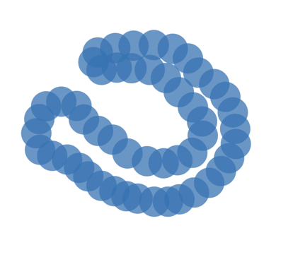

12 Properties of homology
Singular homology for simple examples
Example 12.2
Let \(X = \emptyset\). Then, there are no maps from any \(n\)-simplex to \(X\), so \(\Csing_n(X) = 0\) for all \(n\). Then, we can conclude that
Example 12.3
Let \(X = \{*\}\) be a singleton.
Proof
\(\begin{align*} & \forall\, n \ge 0\ \exists! \s_n : \Delta_n \to \{*\} \\ & \implies \Csing_n(*) = \Z \s_n \cong \Z \\ \end{align*}\)
Additionallly,
So the singular chain complex \(\Csing_\bullet(*)\) is
Additivity
Definition 12.4
Direct product, direct sum
Let \(\{G_i\}_{i \in I}\) be a family of abelian groups.
The direct product
is the cartesian product, with componentwise addition.
The (external) direct sum
is the subgrouo of \(\displaystyle\prod_{i \in I} G_i\) consisting of elements tuples with finitely many nonzero components.
Remark 12.5
In the category of abelian groups,
- the direct product is a product, and
- the direct sum is a coproduct.
If \(I\) is finite, the inclusion \(\displaystyle\bigoplus_{i \in I} G_i \hookrightarrow \prod_{i \in I} G_i\) is an isomorphism.
Theorem 12.6
Additivity of homology
Let \((X_i)_{i \in I}\) be the path-components of \(X\). Then, the map
induced by the inclusions \(X_i \hookrightarrow X\) is an isomorphism.
Proof
Images of any singular simplex is path-connected. Thus, \(\Csing_n(X)\) splits as a direct sum of the subgroups \(\Csing_n(X_i)\), i.e.,
induced by the inclusions \(X_i \hookrightarrow X\) is an isomorphism.
Boundary maps preserve this direct sum decomposition, restricting to \(\Csing_n(X_i) \to \Csing_{n-1}(X_i)\). Therefore, the direct sim decomposition restricts to cycles \(\ker \partial_n\) and boundaries \(\Im \partial_{n+1}\).
Thus, the homology groups also inherit the decomposition.
Zeroth homology counts path-components
Proposition 12.7
H₀ of a path-connected space
Let \(X \neq \emptyset\) be a path-connected space.
Proof
We have that \(\partial_0 = 0\), so \(C_0(X) = \ker \partial_0\) and \(H_0(X) = C_0(X) / \Im \partial_1\).
Now, define
As \(X\neq\emptyset\), \(\epsilon\) is surjective.
Claim: \(\ker\epsilon \supseteq \Im \partial_1\)
Let \(\s \in \Csing_1(X)\).
Claim: \(\ker\epsilon \subseteq \Im \partial_1\)
Assume \(0 = \epsilon(\sum_i n_i \s_i) = \sum_i n_i\).
Identify the singular \(0\)-simplices \(\s_i\) with their image points \(p_i = \s_i(v_0)\). Then, choose a base point \(x \in X\) and paths \(\tau_i : x \leadsto p_i\).
\(\begin{align*} & \implies \tau_i \text{ are singular } 1-\text{simplices, with } \partial \tau_i = \sigma_i - \sigma_x \end{align*}\)
\(\begin{align*} \implies \partial \left(\sum_i n_i \tau_i\right) &= \left(\sum_i n_i \s_i\right) - \left(\sum_i n_i \s_x\right) \\ &= \sum_i n_i \s_i \end{align*}\)
\(\displaystyle \implies \sum_i n_i \s_i \in \Im \partial_1\)
So \(\ker\epsilon = \Im \partial_1\), and
Homotopy invariance
Theorem 12.9
Homotopy invariance of homology
Let \(f, g : X \to Y\) be homotopic maps. Then, the maps
are equal. In particular, if \(f\) is a homotopy equivalence, then \(H_\bullet(f)\) is an isomorphism.
Sketch of proof
Let \(F : X \times [0,1] \to Y\) be a homotopy between \(f\) and \(g\). Equip \(\Delta^n \times [0,1]\) with a \(\Delta\)-complex structure. Composing the \((n+1)\)-simplices of this \(\Delta\)-complex with \(F\), we can construct a prism operator \(P : C_n(X) \to C_{n+1}(Y)\) satisfying
Now, given a cycle \(\alpha \in C_(X)\), we have
and we can conclude that \([g_n(\alpha)] = [f_n(\alpha)]\).
Exact sequences
Definition 12.10
Exactness
Let \(A \xrightarrow{f} B \xrightarrow{g} C\) be two homomorphisms of abelian groups.
They are exact at \(B\) if \(\Im f = \ker g\).
A chain complex \((C_\bullet, \partial)\) is an exact sequence if it is exact at every \(C_n\). That is, \(H_n = 0\) for all \(n\).
Theorem 12.11
Short exact sequence
A short exact sequence of abelian groups is an exact sequence of the form
We see that
- \(\Im f = \ker g\),
- \(f\) is injective, and
- \(g\) is surjective.
Remark 12.12
Exactness makes sense whenever we have kernels and images.
Remark 12.13
A short exact sequence of chain complexes is an exact sequence
where \(A_\bullet, B_\bullet, C_\bullet\) are chain complexes and \(f, g\) are chain maps. The following commutative diagram has exact rows:
\end{tikzcd}
The long exact homology sequence
Lemma 12.14
Zig-zag lemma
A short exact sequence of chain complexes
induces a long sequence in homology
\end{tikzcd}
where \(\partial_*\) is induced by the boundary map in \(D\).
Definition 12.15
Connecting homomorphism
The connecting homomorphism \(\partial_n\) in the homology long exact sequence is defined as follows:
Let \(h \in H_p(E)\) and choose a cycle \(e_p \in E_p : [e_p] = h\) and a preimage \(d_p \in D_p : \psi(d_p) = e_p\).
Note that \(\psi(\partial d_p) = 0\), so \(\partial d_p \in \ker \psi = \Im \phi\). As \(\phi\) is injective, we have that \(\exists!c_{p-1} \in C_{p-1} : \phi(c_{p-1}) = \partial d_p\).
Additionally, \(\phi(\partial c_{p-1}) = 0\), so \(\partial c_{p-1} = 0\).
Now, define \(\partial_*(h) = [c_{p-1}]\).
Diagram chases
Lemma 12.16
\(\partial_*\) is a well-defined homomorphism.
Proof
\(\begin{align*} \text{Let } e_p' \in \ker \partial : E_p \to E_{p-1} \\ \end{align*}\)
\(\begin{align*} \text{Choose } & d_p' \in D_p \\ & c_{p-1}' \in C_{p-1} \text{ s.t.} \end{align*}\)
- \(\psi(d_p + d_p') = e_p + e_p'\)
- \(\phi(c_{p-1} + c_{p-1}') = \partial(d_p + d_p')\)
So we have \(\partial_x[e_p + e_p'] = [c_{p-1} + c_{p-1}'] = \partial_*[e_p] + \partial_*[e_p']\).
\(\begin{align*} \text{Let } & \tilde e_{p+1} \in E_{p+1} : \partial \tilde e_{p+1} = e_p - e_p' \\ & \tilde d_{p+1} \in D_{p+1} : \psi(\tilde d_{p+1}) = \tilde e_{p+1} \end{align*}\)
\(\begin{align*} & \implies \psi(d_p-d_p') = e_p - e_p' = \partial \tilde e_{p+1} = \partial \psi(\tilde d_{p+1}) = \psi(\partial \tilde d_{p+1}) \\ & \implies d_p - d_p' - \partial \tilde d_{p+1} \in \ker \psi = \Im \phi \\ & \implies \exists!\tilde c_p \in C_p : \phi(\tilde c_p) = d_p - d_p' - \partial \tilde d_{p+1} \\ & \phi(\partial \tilde c_p) = \partial \phi(\tilde c_p) = \partial(d_p - d_p') = \phi(c_{p-1} - c_{p-1}') \\ & \implies \partial \tilde c_p = c_{p-1} - c_{p-1}' \end{align*}\)
Lemma 12.17
The long homology sequence is exact at \(H_p(C)\)
Proof
Let \(\beta = [c_{p-1}] \in H_{p-1}(C)\) for some cycle \(c_{p-1}\).
First assume that \(\beta \in \ker \phi_*\). We have that \(\phi_*[c_{p-1}] = [\phi(c_{p-1})] = 0\).
\(\begin{align*} & \implies \phi(c_{p-1}) \in \Im \partial \\ & \implies \exists d_p \in D_p : \partial d_p = \phi(c_{p-1}) & \text{Let } e_p = \psi(d_p) \\ & \implies \partial e_p = \psi(\partial d_p) = \psi(\phi(c_{p-1})) = 0 \\ & \implies e_p \text{ is a cycle} \\ & \implies \partial_*[e_p] = [c_{p-1}] = \beta \\ & \implies \beta \in \Im \partial_* \end{align*}\)
Now, assume that \(\beta \in \Im \partial_*\). By the definition of \(\partial_*\), there exists chains \(d_p, e_p\) as above such that
Lemma 12.18
The long homology sequence is exact at \(H_p(D)\)
Proof
Let \(\gamma = [d_p] \in H_p(D)\) for some cycle \(d_p\).
Claim: \(\Im \phi_* \subseteq \ker \psi_*\)
\(\begin{align*} & \psi \circ \psi = 0 \\ & \implies \psi_* \circ \psi_* = 0 \\ & \implies \Im \phi_* \subseteq \ker \psi_* \end{align*}\)
Assume \(\gamma \in \ker \psi_*\).
\(\begin{align*} & \implies \psi_*[d_p] = [\psi(d_p)] = 0 \\ & \implies \psi(d_p) \text{ is a boundary} \\ & \implies \exists\, e_{p+1} : \psi(d_p) = \partial e_{p+1} \\ \end{align*}\)
\(\begin{align*} & \text{Choose } d_{p+1} : \psi(d_{p+1}) = e_{p+1} \\ & \implies \psi(d_p) = \partial e_{p+1} = \psi(\partial d_{p+1}) \\ & \implies d_p - \partial d_{p+1} \in \ker \psi = \Im \phi \\ & \implies \exists! c_p : \phi(c_p) = d_p - \partial d_{p+1} \\ & \implies \phi(\partial c_p) = \partial(d_p - \partial d_{p+1}) = 0 \\ & \implies \partial c_p = 0 \\ & \implies \phi_*[c_p] = [\phi(c_p)] = [d_p - \partial d_{p+1}] = [d_p] = \gamma \end{align*}\)
Lemma 12.19
The long homology sequence is exact at \(H_p(E)\)
Proof
Exercise
Remark 12.20
The long homology sequence is functorial: a commutative diagram of chain complexes wit exact rows
induces a commutative diagram between the long exact homology sequences
The Mayer-Vietoris sequence
Theorem 12.21
Mayer-Vietoris sequence
Let \(\{U, V\}\) be an open cover of \(X\). Then, there is a long exact sequence
where all horizontal morphisms are induced by the inclusions.
Proof
Let \(\mathcal U = \{U, V\}\), and consider the short exact sequence of chain complexas
By L.12.14, this gives a long exact homology sequence
By T.12.23, \(H_n(\mathcal U) \cong H_n(X)\), and the result follows.
Remark 12.22
Exactness of the Mayer-Vietoris sequence is not immediate. Consider the exact sequence (induced by the inclusions)
where \(j = (\iota_U)_* - (\iota_V)_*\). \(j\) is not surjective: any singular simplex that maps into neither \(U\) nor \(V\) is not in the image.
The problem can be solved by subdividing the simplex, as we will see in the next theorem.
Theorem 12.23
Locality
Consider an open cover \(\mathcal U = (U_i)_{i \in I}\) of \(X\). Let \(\Csing_n(\mathcal U) \subseteq \Csing_n(X)\) be the free abelian group generated by the union of the n-simplices in the \(U_i\).
This generates a chain complex \(\Csing_\bullet(\mathcal U)\), and the inclusion
induces an isomorphism on homology.
Inferring homology from samples
Given: finite sample \(P \subset X\) of unknown shape \(X \subset \R^n\).
Problem 12.24
Homology inference
Determine the homology \(H_*(X)\).
Problem 12.25
Homological reconstruction
Construct a shape \(R\) with \(H_*(R) \cong H_*(X)\) via a canonical isomorphism.
Approach: approximate \(X\) by a thickening
that covers \(X\). This can work, but requires string assumptions.

Theorem 12.26
Cohen-Steiner, Edelsbrunner, Harer 2005
Let \(P \subset \R^n\) be a finite sample of a shape \(X \subset \R^n\). Further, let \(\delta > 0\) such that
- \(P_\delta \supseteq X\),
- the inclusions \(X \hookrightarrow X_\delta \hookrightarrow X_{2\delta}\) of thickenings induce isomorphisms in homology.
Proof

\end{tikzcd}